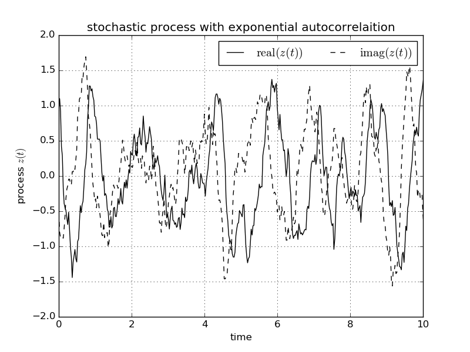

Stochastic Process Module¶
This module contains two different implementation for generating stochastic processes for a given auto correlation function (Karhunen-Loève expansion and Fast-Fourier method). Both methods are based on a time discrete process, however cubic spline interpolation is assured to be valid within a given tolerance.
Example¶
The example will setup a process generator for an exponential auto correlation function and sample a single realization.
def lsd(w):
# Lorenzian spectral density
return 1/(1 + (w - _WC_)**2)
def lac(t):
# the corresponding Lorenzian correlation function
# note there is a factor of one over pi in the
# deficition of the correlation function:
# lac(t) = 1/pi int_{-infty}^infty d w lsd(w) exp(-i w t)
return np.exp(- np.abs(t) - 1j*_WC_*t)
t_max = 10
print("setup process generator")
stp = sp.StocProc_FFT_tol(lsd, t_max, lac,
negative_frequencies=True, seed=0,
intgr_tol=1e-2, intpl_tol=1e-2)
print("generate single process")
stp.new_process()
zt = stp() # get discrete process
The full example can be found here.
Averaging over 5000 samples yields the auto correlation function which is in good agreement with the exact auto correlation.